Script Provided Below.. _calm_escript:
Calm: EScript and Task Library¶
Overview¶
In the Calm: Linux Workloads and Calm: Windows Workloads labs you explored how Calm can utilize Bash and PowerShell scripts to automate application deployments. While shell scripts can be both powerful and versatile, they require the deployment of an endpoint VM on which to copy and execute the script locally.
There are use cases that would be better served to execute code directly within Calm, such as making API calls to other RESTful services like Nutanix Era, GitHub, IFTTT, etc.
To fill this need, Calm offers a script type called EScript. Short for Epsilon Script (Epsilon is the orchestration engine that drives Calm), EScript is a sandboxed Python interpreter. It contains many commonly used modules for scripting and automation. In particular, it contains the requests module as urlreq, used to create external API calls.
Note
The interpreter is sandboxed because the script runs directly within the Calm engine, which means it runs directly within Prism Central. Allowing the user to import unknown and unvetted modules into Prism Central is a security concern.
In this lab you will leverage EScript to perform API calls against an existing web service, your Prism Central VM. You will also leverage Set Variable to set the data returned from an API call to a Calm macro, and the Task Library to understand how common code can be used across multiple blueprints or projects.
Lab Setup¶
This lab assumes basic familiarity with Nutanix Calm.
It does NOT require the Task Manager application deployed as part of other Calm labs. Instead, you will create a new, blank Blueprint and add a credential used to authenticate to Prism Central.
In Prism Central, select > Services > Calm > Blueprints.
Click + Create Blueprint > Multi VM/Pod Blueprint.
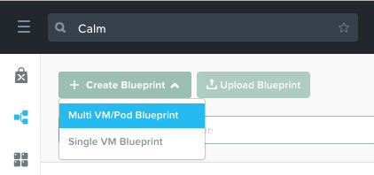Fill out the following fields and click Proceed:
- Name - Initials-EScript
- Description - My First EScript Blueprint
- Project - Initials-Calm
From the toolbar along the top of the blueprint, click Credentials.
Click Credentials and fill out the following fields:
- Credential Name - PC_Creds
- Username - admin
- Secret Type - Password
- Password - Your Prism Central admin Password
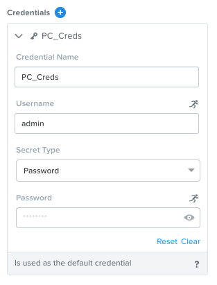Click Save and then Back, ensuring no errors or warnings appear.
Using Existing Machine Services¶
In Application Overview > Services, click to add a new Service.
Under the VM tab, fill in the following fields:
Service Name PC Name PrismCentral Cloud Existing Machine Operating System Linux IP Address localhost Check log-in upon create Unselect Credential Leave default Address Leave default Connection Type Leave default Connection Port Leave default Delay Leave default 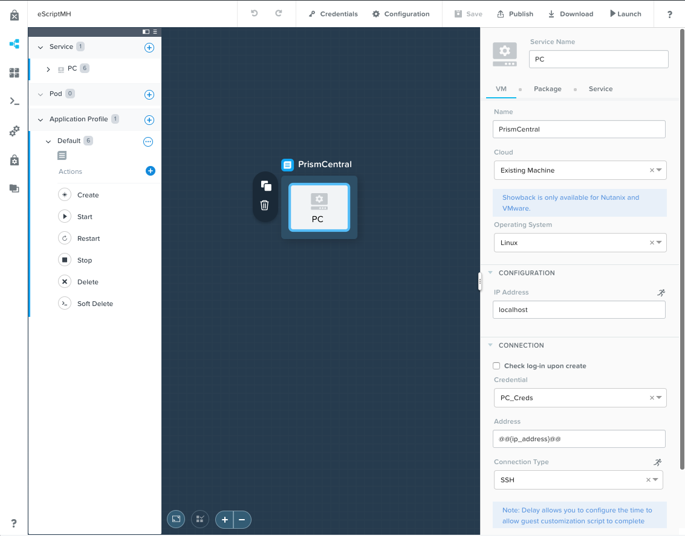There are several new and interesting items in the above configuration:
- Cloud - Instead of creating a new VM on Nutanix or a public cloud provider, we’re instead choosing to automate against an already existing machine. All that’s required for us to enter is an IP Address of the machine, which in our case is Prism Central. Depending on your use case, you may specify something like Ansible Tower, or an Era Server, as an existing machine.
- IP Address - Since we’re going to be making API Calls against Prism Central, and Calm runs directly in Prism Central, we’re just entering localhost as an IP. If you were going to be automating against something like Ansible Tower or Era, you would need to put your Ansible Tower or Era Server IP addresses in this field, rather than localhost. IP Address could also be defined by a variable.
- Check log-in upon create - This is the first time we’ve seen this box unselected. Since EScript tasks run directly within Calm, there’s no need to SSH in to the Service in question. Instead we’ll use credentials directly within the EScript code to authenticate our REST API call.
Click Save, and ensure no errors or warnings appear.
RESTList Custom Action¶
In this exercise, we’re going to be creating a custom action for our application to make a REST API call against Prism Central. Specifically, it will be a POST /list call, where the entity (kind) to be listed (e.g. apps, hosts, clusters, roles, etc.) will be defined by a variable at runtime. The results of this call will then be output.
In the Application Overview > Application Profile section, expand the Default Application Profile.
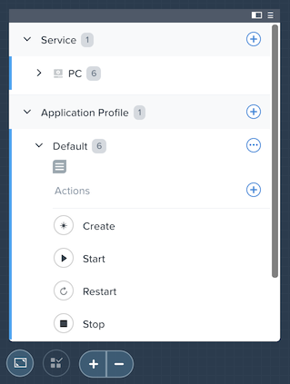Select next to Actions to add a new, custom action.
On the Configuration Pane to the right, name the action RESTList, and add a single variable:
- Name - kind
- Data Type - String
- Value - apps
- Select Runtime by toggling the running man icon in the upper right to blue
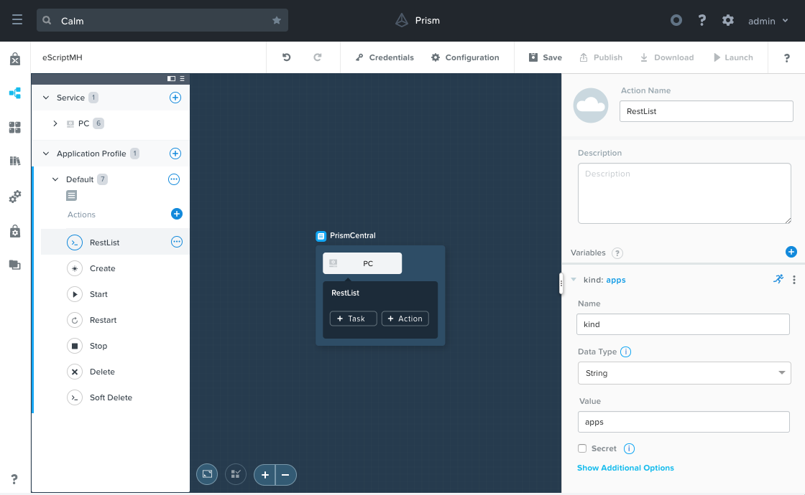When running the custom action later, Calm will prompt the user for input. Apps will be pre-filled default value, but it can be changed prior to executing the script action.
Click the + Task button to add a task to the RESTList custom action. Fill in the following fields:
- Task Name - RuntimePost
- Type - Execute
- Script Type - EScript
- Script - Script Provided Below
# Set the credentials pc_user = '@@{PC_Creds.username}@@' pc_pass = '@@{PC_Creds.secret}@@' # Set the headers, url, and payload headers = {'Content-Type': 'application/json', 'Accept': 'application/json'} url = "https://@@{address}@@:9440/api/nutanix/v3/@@{kind}@@/list" payload = {} # Make the request resp = urlreq(url, verb='POST', auth='BASIC', user=pc_user, passwd=pc_pass, params=json.dumps(payload), headers=headers) # If the request went through correctly, print it out. Otherwise error out, and print the response. if resp.ok: print json.dumps(json.loads(resp.content), indent=4) exit(0) else: print "Post request failed", resp.content exit(1)
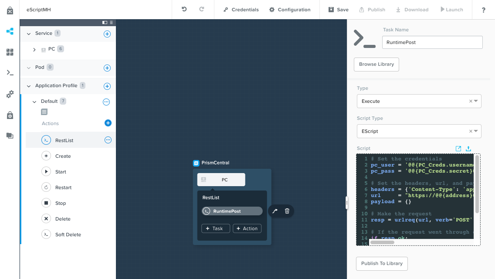There are some new and interesting features of this task:
Note how there is not a Credential dropdown within the Calm UI, and instead we’re setting Python variables equal to our PC_Creds username and password specified earlier. Other APIs may not require authentication, or require an API key to be provided as part of the URL.
We also see the urlreq module being used, which is the exact line that our API call is made. If the response returns as expected, the JSON response will be formatted and printed, otherwise the corresponding error message will be printed.
Click Save, and ensure no errors or warnings appear.
GetDefaultSubnet Custom Action¶
In this exercise, we’re going to create an additional custom action to make a different REST API call. The call will return the list of Projects on this Prism Central instance. We’ll then parse the output of that API call to get the UUID of the default subnet configured for the project that the running application belongs to. This UUID will be set as a Calm variable, allowing for re-use elsewhere in the blueprint. We’ll then do another Rest API call, a GET on the default subnet (utilizing this newly set variable).
Select the PC service. In the Configuration Pane, select the Service tab. Add a variable named SUBNET, leaving all other fields blank.
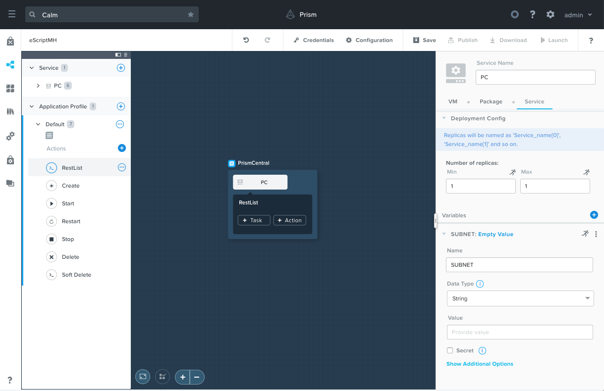In the Application Overview > Application Profile > Default, section, select next to Actions to add a new, custom action.
Name the action GetDefaultSubnet.
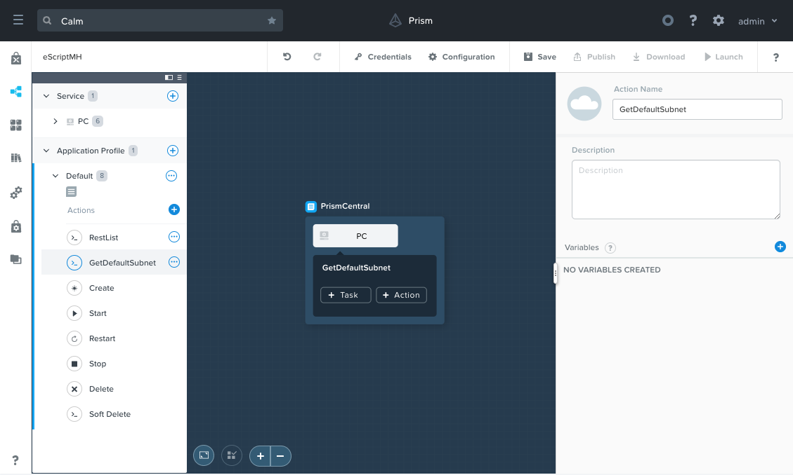Click the + Task button to add a task to the GetDefaultSubnet custom action. Fill in the following fields:
- Task Name - GetSubnetUUID
- Type - Set Variable
- Script Type - EScript
- Script - Script Provided Below
- Output - SUBNET
# Get the JWT jwt = '@@{calm_jwt}@@' # Set the headers, url, and payload headers = {'Content-Type': 'application/json', 'Accept': 'application/json', 'Authorization': 'Bearer {}'.format(jwt)} url = "https://@@{address}@@:9440/api/nutanix/v3/projects/list" payload = {} # Make the request resp = urlreq(url, verb='POST', params=json.dumps(payload), headers=headers, verify=False) # If the request went through correctly if resp.ok: # Cycle through the project "entities", and check if its name matches the current project for project in json.loads(resp.content)['entities']: if project['spec']['name'] == '@@{calm_project_name}@@': # If there's a default subnet reference, print UUID to set variable and exit success, otherwise error out if 'uuid' in project['status']['resources']['default_subnet_reference']: print "SUBNET={0}".format(project['status']['resources']['default_subnet_reference']['uuid']) exit (0) else: print "The '@@{calm_project_name}@@' project does not have a default subnet set." exit(1) # If we've reached this point in the code, none of our projects matched the calm_project_name macro print "The '@@{calm_project_name}@@' project does not match any of our /projects/list api call." print json.dumps(json.loads(resp.content), indent=4) exit(0) # In case the request returns an error else: print "Post clusters/list request failed", resp.content exit(1)
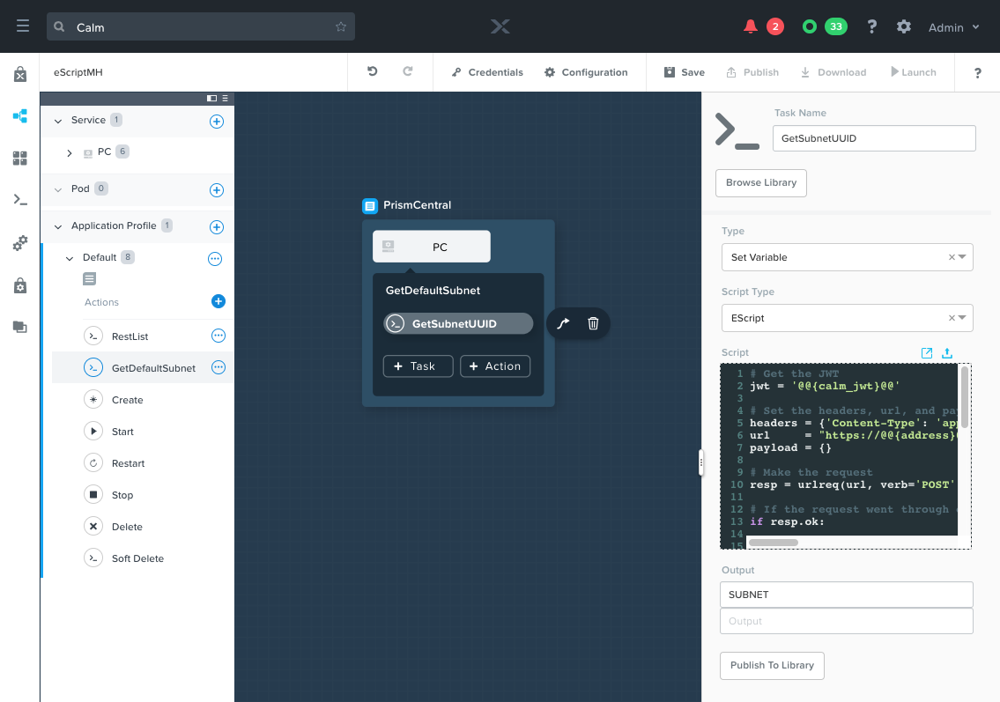There are two key differences between the RESTList and GetDefaultSubnet tasks. The first difference is the use of the Set Variable task type. Take note of the print “SUBNET={0}” line: Calm will parse output in the format of variable=value, and set the variable equal to the value. In this example, we’re printing the variable called SUBNET is equal to the UUID of the “default_subnet_reference” field in the initial API call response. In the Output field below the Script body, we must paste in the variable name for Calm to set the variable appropriately. The variable must already be defined in the Calm blueprint, whether globally, or in this case, as a variable local to the PC service.
The second difference is that the PC_Cred credential was not used to authorize the API call against Prism Central. Instead, we’re using a JSON Web Token provided by the built-in calm_jwt macro.
Click the + Task button again to add a second task to the GetDefaultSubnet custom action. Fill in the following fields:
- Task Name - GetSubnetInfo
- Type - Execute
- Script Type - EScript
- Script - Script Provided Below
# Get the JWT jwt = '@@{calm_jwt}@@' # Set the headers, url, and payload headers = {'Content-Type': 'application/json', 'Accept': 'application/json', 'Authorization': 'Bearer {}'.format(jwt)} url = "https://@@{address}@@:9440/api/nutanix/v3/subnets/@@{SUBNET}@@" payload = {} # Make the request resp = urlreq(url, verb='GET', params=json.dumps(payload), headers=headers, verify=False) # If the request went through correctly, print it out. Otherwise error out, and print the response. if resp.ok: print json.dumps(json.loads(resp.content), indent=4) exit(0) else: print "Get request failed", resp.content exit(1)
In this task we’re dynamically returning details about the default subnet using a GET API call and the SUBNET UUID variable returned by the previous task.
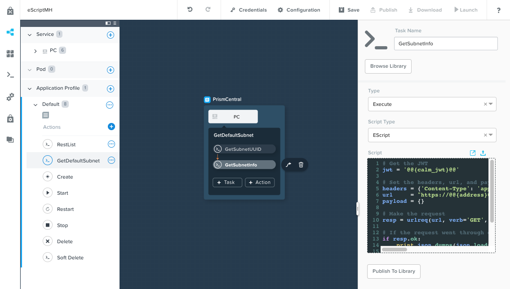Click Save, and ensure no errors or warnings appear.
Running the Custom Actions¶
Launch the blueprint. Name the application Initials-RestCalls, and then click Create.
The Create task should complete quickly, as no VMs are being provisioned or Package Install scripts being run.
Once the application reaches Running status, select the Manage tab.
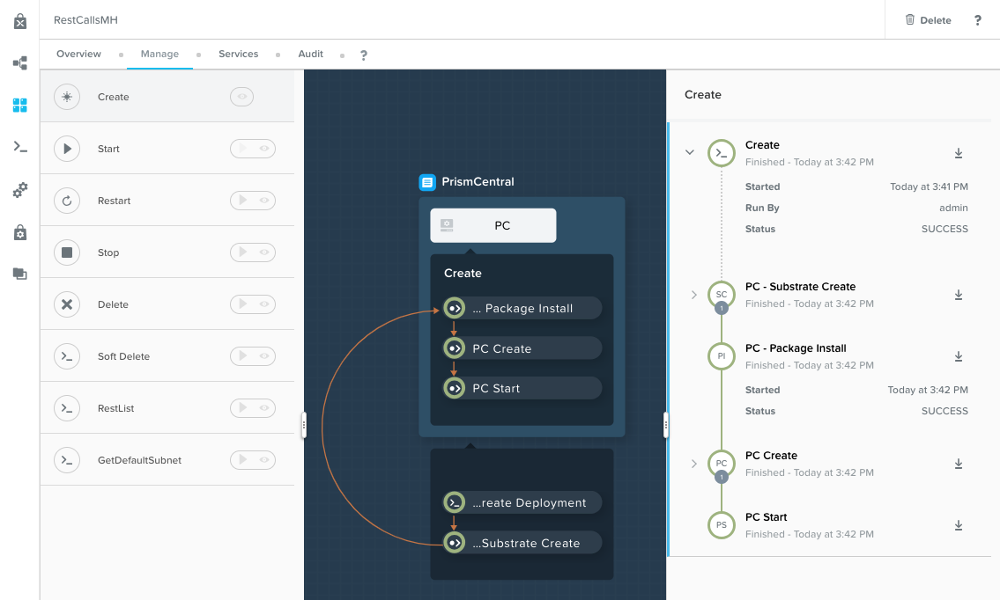Next, run the RESTList action by clicking its icon. A new window appears displaying the kind variable and default apps value. Click Run.
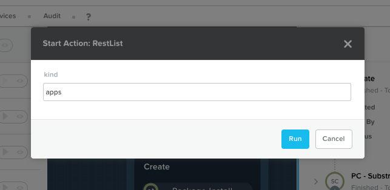In the output on the right pane, maximize the RuntimePost task, and view the API output. The output pane can be toggled by clicking the icon. Maximize the output/script window to make viewing easier. As expected, the script returns a JSON body with an array describing each launched application in Calm.
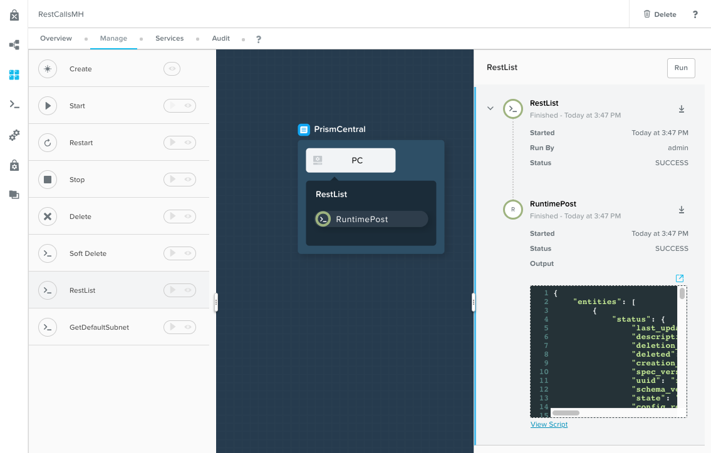Run the RESTList action again, altering the value to another Prism Central API entity, such as images, clusters, hosts, or vms.
Finally, run the GetDefaultSubnet action. Expand both the GetSubnetUUID and GetSubnetInfo tasks, reviewing the output for each task. What is the name and VLAN id of your default subnet?
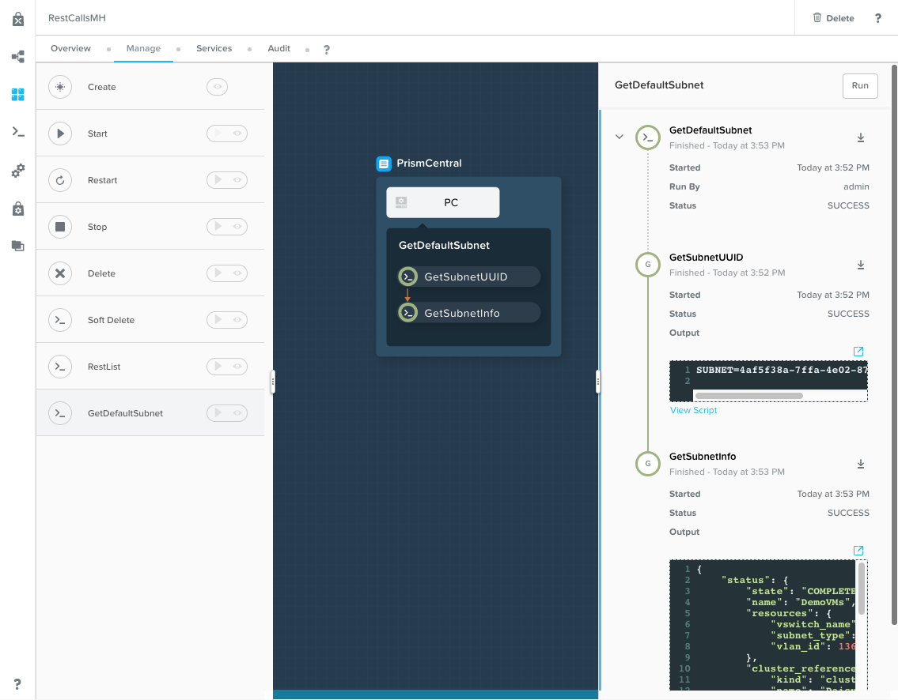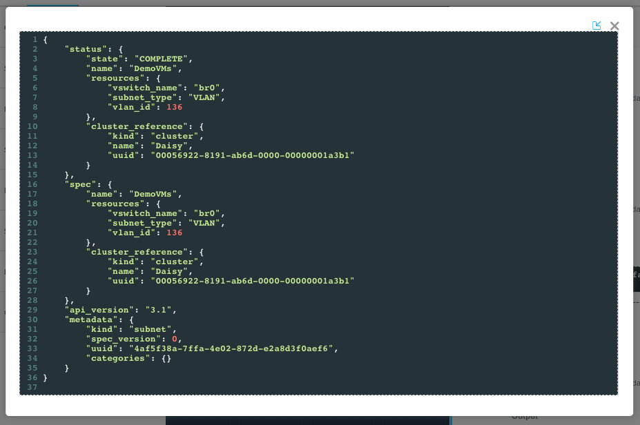
Publishing to the Task Library¶
Tasks such as common API calls, package installations for common services, domain joins, etc. can be broadly applicable to multiple blueprints. These tasks can be used without leveraging third party tools or manually copying and pasting scripts by instead publishing into the Task Library, Calm’s central repository for code re-use.
Open your Initials-EScript blueprint in the Blueprint Editor.
In the Application Overview > Application Profile pane, select the RESTList action.
Select the RuntimeList task to open the task in the Configuration Pane.
Click Publish to Library.
In the Publish Task window, make the following changes:
- Name - Initials Prism Central Runtime List
- Replace address with Prism_Central_IP
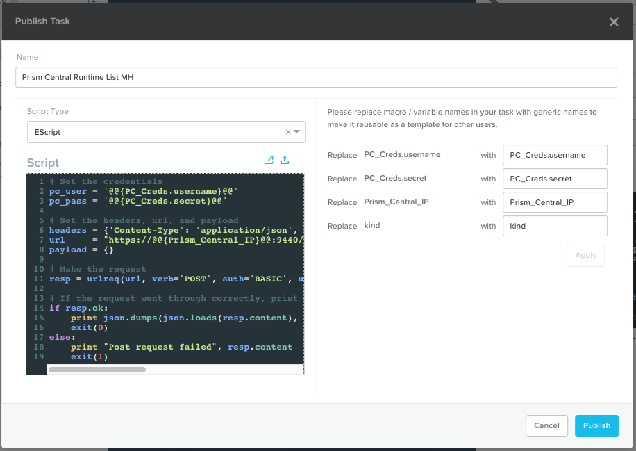Click Apply and note that the original address macro was replaced with Prism_Central_IP in the script window. Replacing macro names allows you to be more generic or descriptive to increase task portability.
Click Publish.
Open the Task Library in the sidebar. Select your published task. By default, the task will be available to the project from which it was originally published, but you can specify additional projects with which to share the task.
Takeaways¶
What are the key things you should know about Nutanix Calm?
- The task library allows commonly used operations to be written once and reused over and over again. As time goes on more objects will be integrated into the task library, from Nutanix-provided common tasks to entire service objects
- Calm 2.7 introduced the HTTP task, allowing the most common use of Escript to be more easily implemented (sending API calls)
- In addition to being able to use Bash and Powershell scripts, Nutanix Calm can use EScript, which is a sandboxed Python interpreter, to provide application lifecycle management.
- EScript tasks are run directly within the Calm engine, rather than being executed on the remote machine.
- Shell, Powershell, and EScript tasks can all be utilized to set a variable based on script output. That variable can then be used in other portions of the blueprint.
- The Task Library allows for publishing of commonly used tasks into a central repository, giving the ability to share these scripts across Projects and Blueprints.